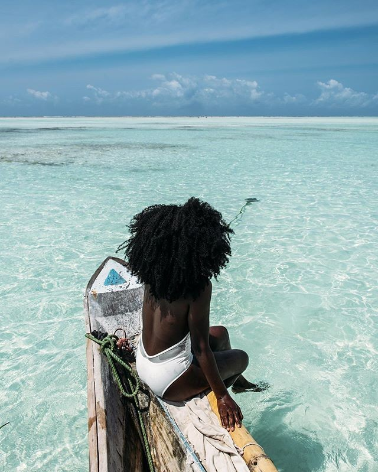
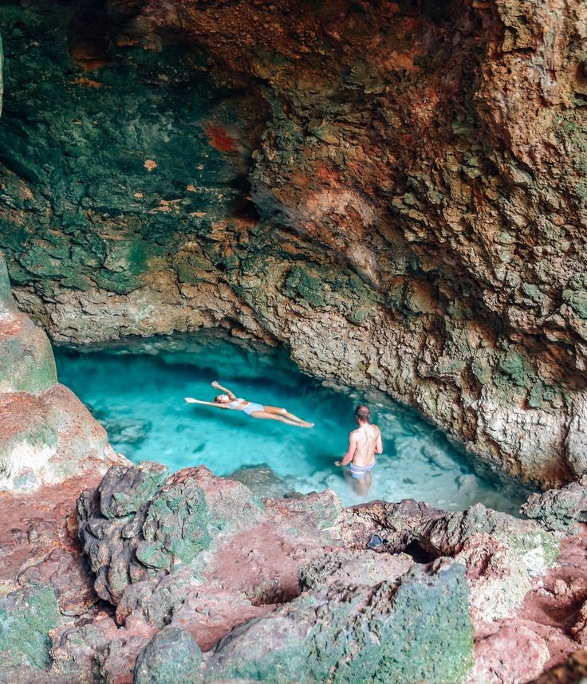
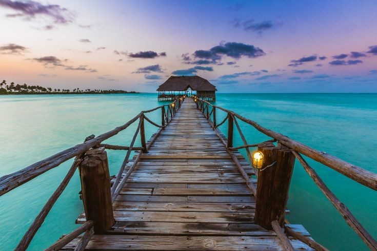
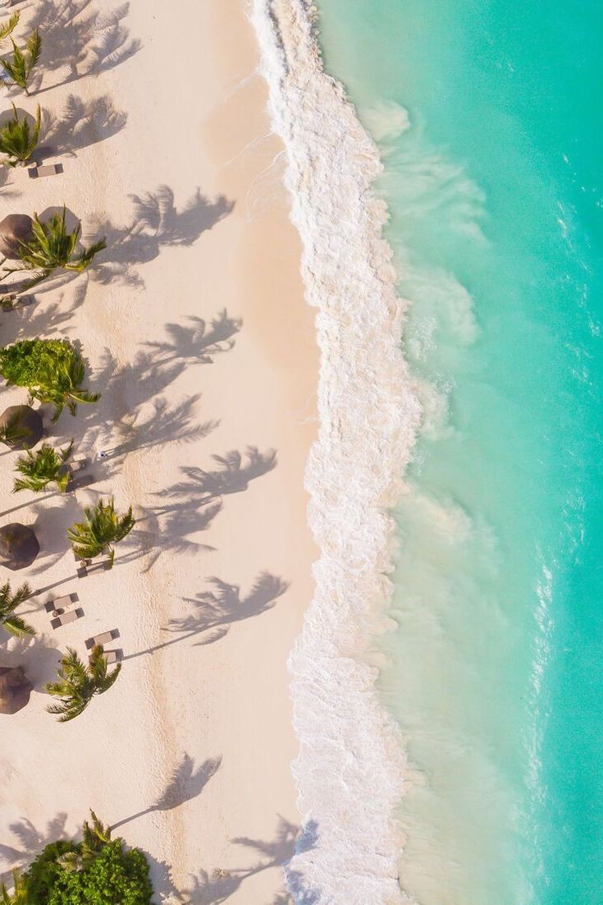
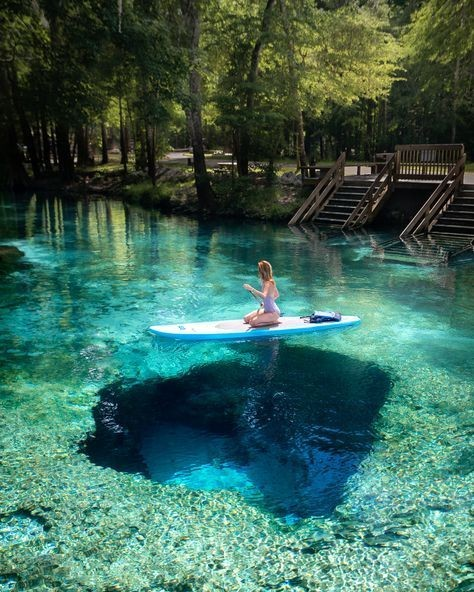
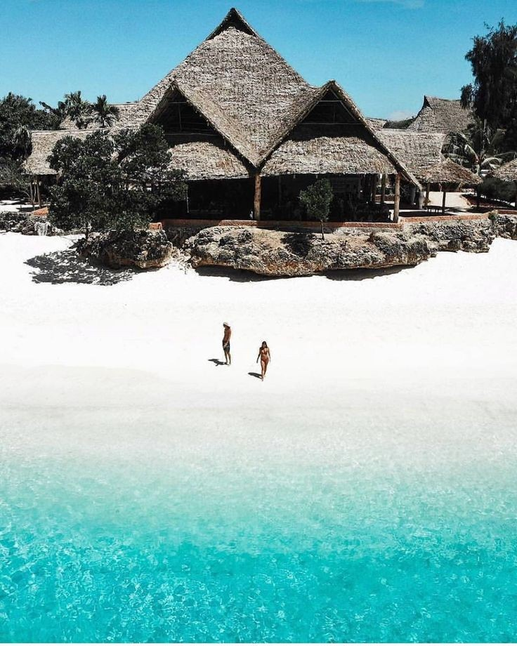

LE ZANZIBAR

À une quarantaine de kilomètres de la côte de la Tanzanie,le Zanzibar est parfumé aux mille et une épices, tourné vers la culture orientale. Ce long radeau de terre est baigné par des plages infinies de sable blanc, bordée de palmiers et de cocotiers.
Entre océan et histoire,quoi de mieux qu'une promenade dans cette somptueuse nature?

Cet endroit paradisiaque deviendra votre coup de coeur!
La carte postale est fidèle à l'idée que l'on se fait en rêve de ce petit bout d'Afrique.

L'île principale d'Unguja, celle que tout le monde appelle Zanzibar, est l'alternative enchantée parfaite aux destinations classiques de l'océan Indien, Maurice, Maldives et Seychelles, entre autres. Le farniente est à l'honneur sur le sable fin de plus de 25 plages, dont les plus paradisiaques se découvrent sur la côte Est.

Kigomani ou encore Jambiani : difficile de résister à l'appel de ces noms aux sonorités swahili, la langue parlée ici, en Tanzanie et au tout proche Kenya. La plage de Pongwe s'illustre par une particularité inratable : The Rock, un restaurant perché sur un caillou à quelques mètres du bord de l'eau, qui se laisse approcher entre deux marées en barque ou à pied. Celles et ceux qui n'ont pas peur de se mouiller jusqu'aux cuisses s'y attablent en terrasse pour profiter d'un panorama en dégradé de bleus à couper le souffle. Dans l'assiette, pour des prix compris entre 9 et 25 €, de savoureux carpaccios de poissons pêchés .

Les fans de plongée n'auront qu'à s'équiper d'un masque et de palmes pour observer des fonds marins aux coraux et poissons multicolores. Autour de la minuscule île de Mnemba, dans le nord-est de Zanzibar, les eaux du lagon offrent parfois aux plongeurs la chance de croiser quelques dauphins et tortues marines.
Zanzibar ne se contente pas de ce simple tableau balnéaire. L'intérieur de l'île regorge de trésors à découvrir. A commencer par une flore épicée à souhait, dont on s'imprègne dans les chemins verdoyants de plusieurs plantations ouvertes à la visite.
